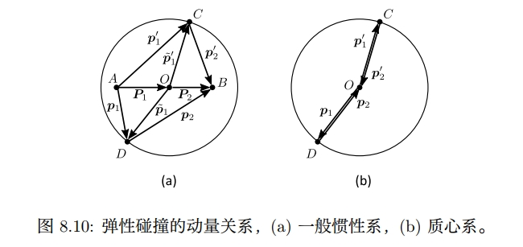
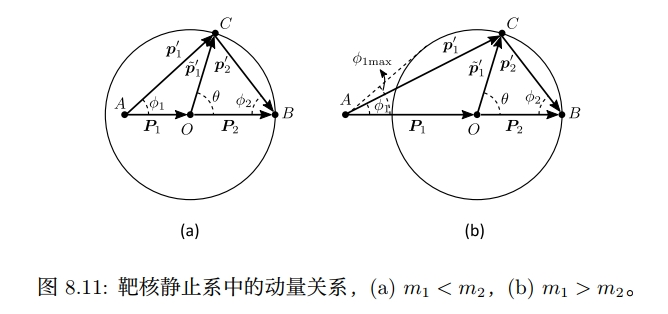
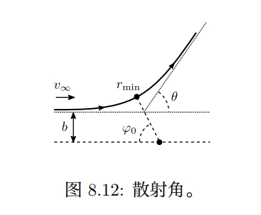

经典力学期末辅导
1. 两体问题
1.1 两体退耦
两体问题主要分为三种cases：
- 束缚态
- 散射
- 衰变
参考书目只讨论了前两种情况，因此本笔记也是一样。
两体问题的拉氏量很容易可以写出1：
我们只考虑两体构成的系统，无其他系统作用的时候，时空背景应该是非常对称的。具体体现为，其应该具有空间平移不变性与各向同性。空间平移不变性是说，我们将整个系统一起平移到任意位置，应该分辨不出与原先位置的区别，因此势能可以写为$V(x_1,x_2)=V(x_1-x_2)$的形式；而各向同性则要求我们以任意角度来研究系统都是一致的，也就是说将整个系统转动一个角度，其内部相互作用不变，分辨不出与原先角度的区别，因此势能可以进一步写为$V(\abs{x_1-x_2})$的形式.最后我们拉氏量写为:
它依旧是不好处理的，因为两个坐标在势能中以耦合的形式出现，因此我们首先要做的就是退耦。退耦有两个要求：
- 保持动能形式不变
- 使得势能退耦
退耦是以坐标变换的形式实现的，我们假设有那么一组坐标$y_1,y_2$能够满足我们的要求，他们与原先坐标的关系为:
首先退耦要求动能：
保持对角形式，因此有:
退耦第二个条件要求势能退耦:
因此有$a=c$或者$b=d$.不妨令$a=c$，与第一个条件结合有$\frac{b}{d}=-\frac{m_2}{m_1}$则动能可以写为:
其中$k$定义为$b=-km_2,d=km_1$.势能写为$V(|k(m_2+m_1)y_2|)$.
显然只要坐标变换满足上面的要求，就可以实现退耦。因此我们不妨选择$a=1,k=\frac{1}{m_1+m2}$,则此时$y_1=\frac{m_1x_1+m_2x_2}{m_1+m_2},y_2=\mathbf{r}$2：
到这里就实现了坐标的退耦，从定义可以看出第一个坐标是质心坐标，第二个坐标是相对矢量，$m_c$和$m_r$分别是质心质量和约化质量$\frac{m_1m_2}{m_1+m_2}$.
因此我们可以将拉氏量拆成两部分来分析，第一部分是质心的运动，等效于质量为$m_c$的自由粒子。第二部分是相对运动，拉氏量为:
用球坐标则写为:
在各向同性的背景下，势能已经默认是中心势场了。
1. 这里的两个坐标都是三维矢量，但是我懒得加粗，后文也是。 ↩
2. 这里强调r是一个矢量所以加粗了，后面放进绝对值符号后得到的就不是矢量了。 ↩
1.2 中心势场
直接带入拉格朗日方程的话不太好求解，观察可以发现拉氏量不显含时间，且存在循环坐标，因此我们利用积分常数$E,J$来求解.
$L_r$不显含时间，因此能量$E=T+V=\frac{m_r}{2}(\dot{r}^2+r^2\dot{\theta}^2+r^2\dot{\phi}^2\sin^2\theta)+V(r)$是一个常数;拉氏量中不含坐标$\phi$，因此z方向$J_z=m(r\sin\theta)^2\dot{\phi}$是一个常数3.关于该常数的物理意义为什么是z方向角动量的讨论见附录A.到这里只能得到z分量是常数，其他分量可以随时间改变。但是考虑各向同性，我们可以随意选择z轴，如此一来所有方向的角动量都是常数，因此总角动量是常数，我们不妨选定角动量方程为z轴。
3. 从这里开始，我们省略约化质量的下标，将其直接记为$m$ ↩
角动量是常数使得我们可以选取$\theta=\frac{\pi}{2}$固定不变。因此能量写为:
我们从上式写出径向速度的表达式:
因为我们关心的是$r(\phi)$,要得到$r$关于$\phi$的方程，所以我们想办法把时间$t$消去。利用另外一个常数$J$:
与上面能量常数的式子一比得到:
在给出具体的势能$V(r)$后，理论上可以积分得到$r(\phi)$。
1.2.1 开普勒问题
开普勒问题即$V(r)=-\frac{\alpha}{r},\alpha>0$.将其带入上面的积分表达式并进行积分可以得到：
对右边积分的分母进行配分:
带回积分中有：
这是高数中熟悉的积分，三角换元即可$J(\frac{1}{r}-\frac{m \alpha}{J^2})=A\sin\theta$:
之所以写成这种形式，是我们提前知道开普勒问题的轨道应该是圆锥曲线形式的$r=\frac{p}{1+e\cos\phi}$4.对比之下我们可以设出半通径$p$和偏心率$e$为：
同时不妨设$\phi_0=\frac{\pi}{2}$，最后半径可以写为圆锥曲线的形式。当总能量E小于零时，离心率$e$小于1，轨道为椭圆曲线；总能量E大于零时，离心率$e$大于1，轨道为双曲线；当总能量E等于零时，离心率刚好为1，轨道为双曲线。
4. 高老师的书上是在积分前就设出了半通径和偏心率，我觉得那应该是事先知道结论的做法。 ↩
1.2.2 散射问题
散射问题与开普勒问题的区别只在势能的正负号。散射的势能大于零，因此粒子会远离其中一个粒子。散射问题的核心方程是前面的:
在进行计算之前我们需要讨论一下不同参考系角度的问题。

右边的小图可以不用看，主要看左边的小图，不带波浪号写小写的$p_1,p_2$是任意参考系中的动量，而大写的$P_1=\frac{m_1}{m_1+m_2}P,P_2=\frac{m_2}{m_1+m_2}P$是总动量$P$按照质量比例划分的动量，我觉得没有什么物理意义，只是用于辅助。带波浪号且小写的$\tilde{p}_1,\tilde{p}_2$是质心系中的动量，$\tilde{p}_1’,\tilde{p}_2’$是质心系中碰撞后的动量。质心系中有:
这四个动量的波长都相等，因此以他们的模长做一个圆，即得到左边的小图，这是对任意参考系都成立的。我们现在取一个特殊的参考系——靶核静止系。

在该参考系中，$p_2=0,P=p_1$，因此$P_2=\frac{m_2}{m_1+m_2}P\equiv\tilde{p}_1$.所以上图中的$\theta$实际上是$\tilde{p}_1,\tilde{p}_1’$的夹角，也就是质心系中$m_1$碰撞前后的夹角。$\phi_1,\phi_2$则是在靶核静止系中两个粒子碰撞前后的夹角，他们与$\theta$有如下几何关系:
因此碰撞后两粒子的偏转角归结为求$m_1$在质心系中的偏转角$\theta$.因此我们对核心式子进行积分：

其中最小半径由“此时径向速度为0”这一事实给出:
从上式中反解出$r_{min}$代入积分下限，再代入势能的具体形式即可（比如$V=\frac{\alpha}{r}$）,最终散射角$\theta=\pi-2\phi_0$.
例题
2. 小振动
2.1 简正模式
假设原本拉氏量的稳定解已知，我们对系统做一扰动，则系统位形会微扰平衡位置进行振动。根据微扰展开的知识我们知道，微扰拉氏量在背景做小量展开得到的零阶量是未微扰的拉氏量，其给出稳定的背景解；而一阶拉氏量在背景处（背景满足零阶拉氏量给出的运动方程）自动为零；因此二次项是贡献振动的第一项。我们将拉氏量小量展开到二阶后，在相差边界项的意义下总可以写成如下形式:
其中的$q$是系统是系统相对背景的位形（可以理解为微扰位形），对于多变量的情况$q$自动变成矢量，$G$自动变成一个矩阵。利用分量形式可以很容易写出该拉氏量的拉格朗日方程:
其解具有谐振子的形式，可以直接写出：
其中系数A是一个待定的复常矢量，维度与坐标个数系统，$c.c.$代表复共轭。其中$\omega$被称为小振动系统的特征频率，目前我们还没解出来。为了得到特征频率，我们把解带回到方程中得到：
根据线性代数的知识我们知道，要使$A$有解，需系数行列式为0：
这个方程可以解出若干个特征频率，几个不同特征频率即有几种简振模式，不同的特征频率$\omega\alpha$带回方程得到不同的特征矢量$A\alpha$，得到的解$q\alpha=A\alpha e^{-i\omega_\alpha t}+c.c.$是对应的简正模式。
最后系统的通解是所有简正模式的叠加：
求解简正模式一般步骤如下:
2.2 简正坐标
在前面求解出的简正模式中，单个模式的振动可能涉及多个自由度，同时系统的真实运动又是由所有简正频率的线性叠加，因此这种“多对多”的关系会为问题带来复杂性。简正坐标便是对原本的广义坐标进行坐标变换后得到的一组特别的广义坐标，使得每个简正频率只对应一个变换后的一个自由度。
之所以不同的振动自由度会混合在一起，是因为我们的$G,W$矩阵不是对角的。所以求简正坐标归结为，选取一组新的广义坐标$\zeta$使得二次拉氏量在该坐标下的$\tilde{G},\tilde{W}$矩阵对角化。像两体问题退耦一样，我们取新旧坐标之间满足简单的线性变换关系：
将其带入到原二阶拉氏量中有：
利用线性代数的知识，我们不加证明地指出，对于正定的两个实对称矩阵，一定可以同时对角化，且总可以取s个线性独立的特征矢量组成矩阵$M$使得两个矩阵对角化。我们将特征矢量$A_\alpha$在$G-$内积的意义下归一：
如此组成的变化矩阵$M$满足：
其中行指标写在左边，列指标写在右边，$\alpha$指代第$\alpha$个特征矢量，$a$指代某个特征矢量的$a$分量，可以使得$\tilde{G}$矩阵满足:
根据运动方程，如此构成的矩阵$M$也可以是$W$矩阵对角化：
因此我们找到了使得两个矩阵$G,M$同时对角化的矩阵$M$,他由系统的特征矢量构成，可以使得我们进行一个特殊的坐标变换，变换后的一个特征频率对于一个自由度。变换后的坐标称为简正坐标：
综上，我们得到简正坐标的一般步骤为：
例题
3. 刚体转动
3.1 转动理论
3.1.1 转动的描述
从直觉来说，转动是一种保距的操作，转动后各个点之间的距离保持不变。抽象地说，转动是：
- 保度规的坐标变换
- 正交归一基的线性变换
两个观点是等价的，只不过第一个是主动变换的角度，第二个是被动变换的角度。
3.1.1.1 坐标变换
首先我们要求在转动前后空间的线元不变，其次我们希望转动后还能以原先的度规来衡量空间距。以欧式空间为例，变换前空间线元为:
变换后的坐标记为$\tilde{x}(x)$，则线元表达式写为：
要求以欧式度规度量空间：$\mathrm{d}s^2=\delta_{kl}\mathrm{d}\tilde{x}^k\tilde{x}^l$,则转动的坐标便要要满足：
这就是为什么为什么说转动是一种保度规的特殊坐标变换5。我们记这个坐标变换为${R^i}_j$:
根据保度规要求，其满足$R^T1R=1$,所以欧式空间的转动矩阵是正交矩阵，转动被称为正交变换。他能够使得欧式空间中矢量的内积不变：
1.3.1.2 线性空间中的基变换
设线性空间中的两组基${e_i},{\tilde{e}_i}$满足线性变换：
基底变换应该满足$
可以看出基变换的矩阵与转动的坐标变换矩阵一样，说明坐标变换和基变换是转动的两种视角。
5. 并不是所有的空间都存在满足上述条件的坐标变换，这对空间本身提出很高的要求。 ↩
3.1.2 转动群
期末试题应该不会考，想了解可见群论学习笔记(part1) /).
3.1.3 角速度
设${\bar{e}_i}$是一组静止的基底，而${e_i}$是一组转动的基底，因此我们可以写出他们的关系:
考虑无穷小时间后的基底应该与原先相差一个无穷小转动：
因此上面的$\Omega$衡量基矢变换的速率，可以被称为角速度矩阵，是一个反对称矩阵。我们可以写出角速度矩阵与转动矩阵之间的关系：
若是考虑两组运动基底之间的关系，设他们之间关系为$\tilde{e}_i={A_i}^je_j$,则组基底各自代表的参考系中，角动量的关系为：
因此可以直接读出${\tilde{e}_i}$参考系中的角速度矩阵为:
其中特殊的情况就是，两个运动基底之间相对静止$\frac{\mathrm{d}}{\mathrm{d}t}A=0$:
符合我们的认知：从一个空间O经过正交变换$A$变换到另外一个空间O’，则两个空间中算符的关系为相似变换$X’=AXA^T$.
例题
3.2 刚体
3.2.1 惯量张量
3.2.2 欧拉方程
例题
4. 诺顿定理*
附录A
关于常数$C=m(r\sin\theta)^2\dot{\phi}$，我们可以利用直角坐标与球坐标的关系将其写为直角坐标的形式。
带回常数$C$得到：
而角动量$J$的表达式为:
因此可以看出常数$C$是角动量的z分量。